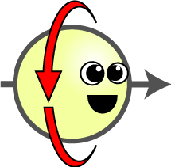
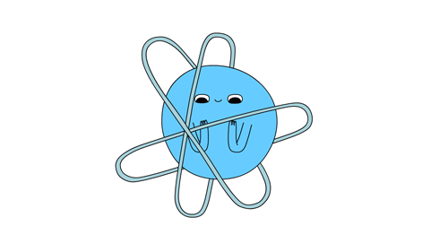
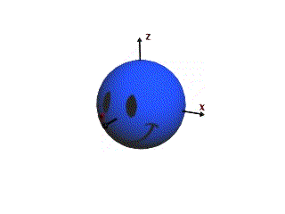

Our Problem Statement:
The main challenge of Spintronics is the high power consumption required to change the spin state of an electron, as it takes significant energy to apply the necessary torque. This makes Spintronics a less viable alternative to CMOS-based data manipulation.



FAQ's about our Problem Statement
Yes. We have already identified a major potential issue with our
implementation of Spintronics that could even undermine one of our promises if left unchecked.
One of the core principles of spintronics is the manipulation of electron spin, the problem mainly exists within the mechanism of switching spin states.
Certain mechanisms of Spintronics require relatively high current densities, especially those needed for switching the
magnetic states of memory cells, which leads to excessive power consumption, heat generation and reliability issues.
When dealing with ferromagnetic materials, the electrons act like tiny magnets (creating magnetic domains) to store and process
information. Each of these magnetic domains can point in different directions and in order to change their direction the spin of
electrons needs to exert enough torque. This process requires a lot of energy, especially since smaller spintronic devices need
even more current to overcome the energy barriers that hold the magnetic domains in place. The higher power consumption involved
in switching directions/states undermines the potential benefits of spintronics, making it less practical for certain applications.
There is a promising approach to this issue in the works called Voltage-Controlled Magnetic Anisotropy (VCMA) that leverages electric
fields to control the magnetic orientation, which is far less energy intensive than using electrical currents. This would necessitate
some further research, though, such as the development of new materials that display high sensitivity to electric fields to maximize
the effectiveness of this technology, optimization of device architecture to better integrate with existing spintronic components, and
the refinement of fabrication techniques to ensure these new materials and structures can be produced reliably at scale while also making
them compatible with current semiconductor processes.
What we should do is focus on a strategy that pushes forward VCMA as a viable alternative to current-driven methods. Currently, it is
not and only theoretically can it become so in the future, but with some more research investment, collaboration across disciplines,
testing and promotion of industry partnerships, the transition of this revolutionary technology from labs to commercial deployment can
go smoothly.
There are many risk factors associated with Spintronics such as:
Current devices consume significant energy to alter spin states.
Lack of durable and scalable materials for spintronic applications.
Dependence on materials can cause concern about supply chain vulnerabilities and cost.
Extraction and use of non-renewable materials could result in ecological harm.
Our Solution:
We propose focusing on using antiferromagnetic materials in conjunction with Voltage-Controlled Magnetization (VCMA) for spin manipulation. VCMA uses electric fields to efficiently manipulate spin states in antiferromagnetic materials, offering a low-energy alternative to traditional magnetic field-based methods.